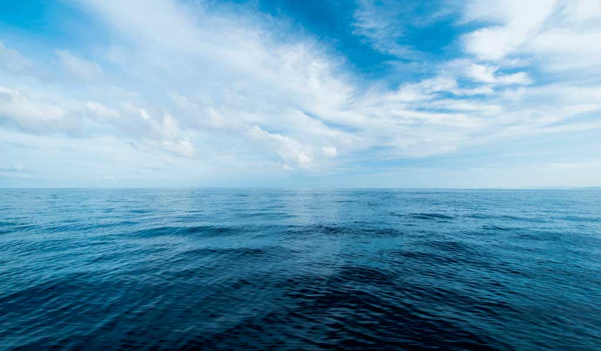
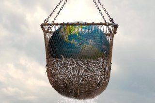
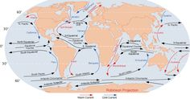
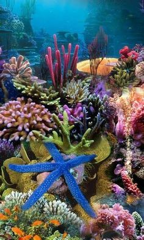

¿Qué son?
Son grandes masas de agua que rodean los continente y rigen las condiciones meteorológicas del mundo y agitan el caleidoscopio de la vida.
En peligro
Sin embargo, la pesca excesiva y la amenaza del calentamiento global amenazan con dejar estas zonas estériles.
Geografía
Los geógrafos dividen el océano en cuatro secciones principales: el Pacífico, el Atlántico, el Índico y el Ártico. Los océanos más pequeños son denominados mares, golfos y bahías como el Mar Mediterráneo, el Golfo de Méjico y la Bahía de Bengala. Las masas independientes de agua salada como el Mar Caspio y el Gran Lago Salado son distintas a los océanos del mundo.

Carácteristicas
Los océanos contienen aproximadamente 1,35 billones de kilómetros cúbicos de agua lo que representa aproximadamente el 97% del suministro de agua de la Tierra. El agua tiene aproximadamente un 3,5% de sal y contiene rastros de todos los elementos químicos encontrados en la Tierra. Los océanos absorben el calor del sol y lo transmiten a la atmósfera y los distribuyen alrededor del mundo a través de las constantes corrientes oceánicas. Esto dirige las condiciones meteorológicas mundiales y actúa como un calentador en invierno y como el aire acondicionado en verano.
Hogar de millones de especies
La vida comenzó en el océano y el océano sigue siendo el hogar de la mayoría de la fauna y la flora de la Tierra, desde diminutos organismos unicelulares a la ballena azul, el animal vivo más grande del planeta. La mayoría de la flora del océano consiste en algas microscópicas llamadas fitoplancton que flota en la superficie y a través de la fotosíntesis produce aproximadamente la mitad del oxígeno que los humanos y el resto de otras criaturas terrestres respiran. Las macroalgas y las kelp son grandes algas fácilmente visibles para el ojo humano. Las plantas marinas con raíces, como las que forman las praderas marinas solo pueden sobrevivir a una profundidad a la que los rayos puedan ayudar a la fotosíntesis, aproximadamente a unos 200 metros. Aproximadamente la mitad de los océanos tienen una profundidad de más de 3.000 metros. Las mayores profundidades del océano están en su mayoría desprovistas de vida pero los puntos calientes biológicos aparecen alrededor de respiraderos hidrotermales. Estas estructuras en forma de chimenea arrojan gases y agua rica en minerales que provienen de la parte inferior de la corteza terrestre. Las lombrices, las almejas y los mejillones se reúnen alrededor de los respiraderos para alimentarse de las bacterias amantes del calor. Peces extraños con ojos sensibles, colmillos traslucidos y cebos bioluminescentes merodean en las aguas cercanas. Otros peces, pulpos, calamares, anguilas, delfines y ballenas surcan las aguas abiertas mientras que los cangrejos, langostas, estrellas de mar, ostras y caracoles reptan y se escabullen por el fondo del océano. Las criaturas como las medusas no tienen por dónde huir y la mayoría quedan al antojo del viento y las corrientes. Los mamíferos como las nutrias, las morsas e incluso los osos polares también dependen del océano para su supervivencia y entran y salen según las necesidades de supervivencia. Las colonias de pólipos forman arrecifes de coral cuando mueren. Los arrecifes se encuentran principalmente en las aguas tropicales poco profundas y son el hogar de un brillante mosaico de pólipos, plantas y peces. Los arrecifes de coral también son víctimas visibles de la actividad humana. El calentamiento global, sedimentación y otros fenómenos están estresando los corales hasta la muerte y los pescadores demasiado entusiastas recogen con sus redes más comida de lo que los arrecifes pueden restaurar. Las actividades humanas tienen impacto en casi todas las partes del océano. Las redes perdidas y desechadas siguen siendo letales para los peces, gaviotas y mamíferos marinos que resultan atrapados por ellas ya que quedan a la deriva. Los barcos vierten petróleo y basura y transportan bichos a hábitats donde no están preparados para su llegada. Los manglares están libres de casas e industrias. Más de la mitad de la población de EE.UU. vive en zonas costeras y tira basura y aguas residuales al océano. Los residuos líquidos de fertilizantes de los cultivos convierten grandes franjas de océano en zonas muertas incluyendo un área del tamaño de Nueva Jersey en el Golfo de Méjico. El dióxido de carbono está volviendo ácida el agua del océano y la llegada de agua dulce de los glaciares que se derriten amenaza con alterar las corrientes que influencian las condiciones meteorológicas. Los conservacionistas piden con insistencia protección internacional para proteger y reponer las menguantes existencias de peces en el océano y las reducciones de gases de invernadero para reducir el calentamiento global.
